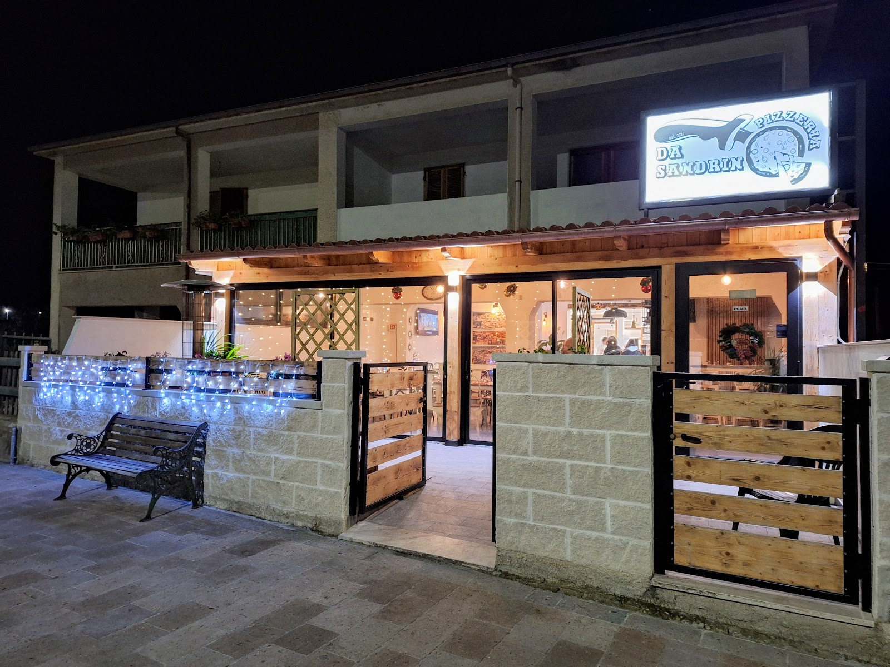
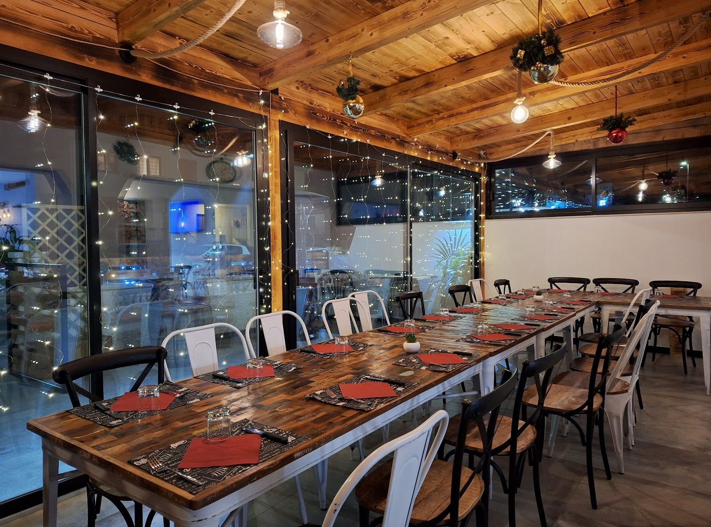
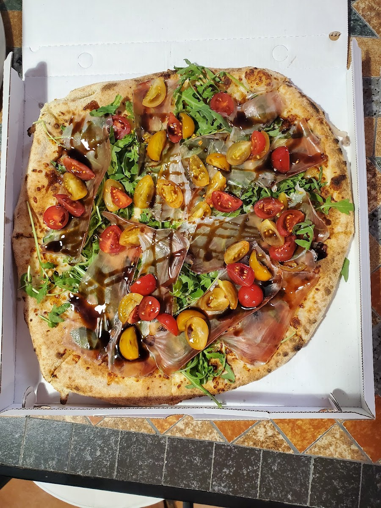
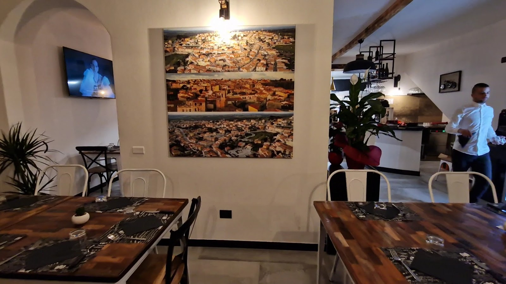
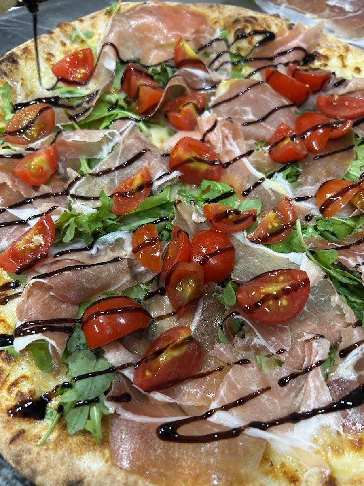
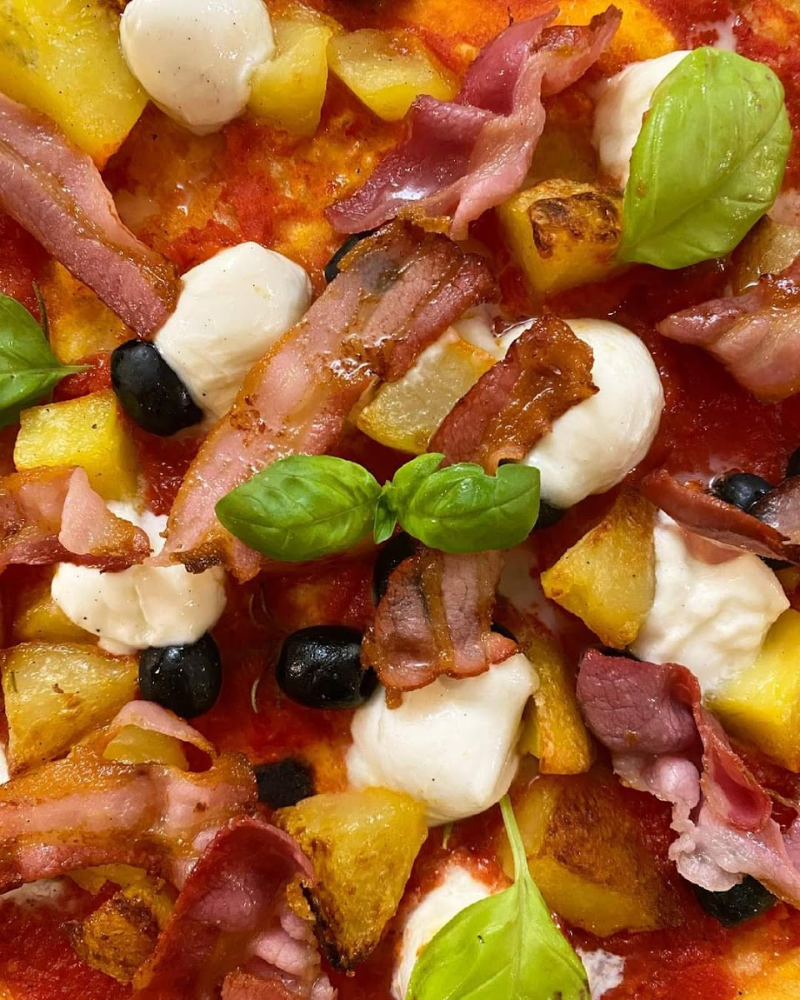

Pizzeria & Ristorante — Uri, Sardegna
Pizza vera,
casa nostra.
Uri, ogni sera.
Forno acceso ogni sera dalle 19:00. Ventotto pizze in carta, dalla Margherita alle ricette della casa come la Sassarese e la Balsamica, più i piatti della tradizione sarda per chi vuole un primo o un secondo.

34 recensioni

Chi siamo
Una nuova casa per la pizza a Uri
Da Sandrino è una location nuova nel cuore di Uri: minimal, curata e sempre pulita, con una sala interna e una veranda coperta pensata per le cene in compagnia. Chi arriva viene accolto dai profumi della cucina fin dalla porta, e lo staff — giovane e disponibile — passa tra i tavoli per assicurarsi che tutto sia perfetto.
Siamo pizzeria e ristorante: oltre alle ventotto pizze del forno trovate anche primi e secondi della tradizione sarda — spaghetti alla bottarga, alle vongole, e le immancabili seadas per chiudere in dolcezza. Per il menu ristorante del giorno, chiedete in sala o chiamateci.
Galleria
Dal forno al tavolo




Recensioni
Cosa dicono a Uri
4,8 su 5 con 34 recensioni su Google. Alcune, così come sono state scritte.
“Pizza buonissima, ingredienti di qualità, impasto leggerissimo e gentilezza.”
Recensione Google
“Nuova location a Uri, abbastanza minimal ma carina, accogliente e molto pulita. Staff composto da ragazzi molto gentili.”
Pietro Solinas — Local Guide, Google
“In un piccolo paese della provincia di Sassari è nata una nuova pizzeria: un posto accogliente dove appena seduti si viene coccolati dai profumi della cucina.”
Giuseppe Deriu — Local Guide, Google
“Il ragazzo che fa le consegne è arrivato in anticipo, super puntuale.”
Recensione Google
Dove siamo
Vi aspettiamo a Uri
- Indirizzo
- Via Sassari 179, 07040 Uri (SS)
- Telefono
- 079 966 1193
- Cellulare
- 392 287 7222
- Orari
- Ogni sera dalle 19:00, chiuso il lunedì
- Servizi
- Consegna gratuita, asporto, consumazione sul posto